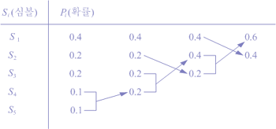
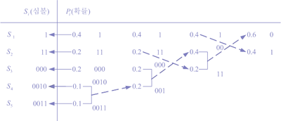
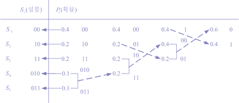
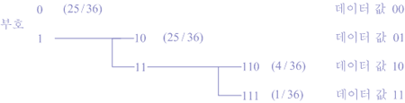
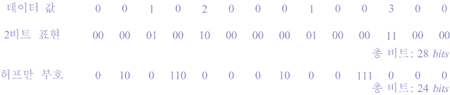
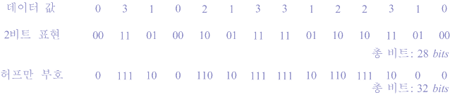
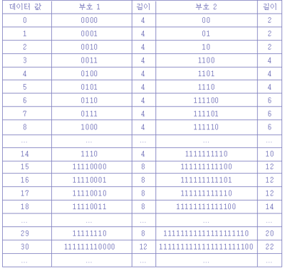

DPCM은 예측한 값과 실제의 값과의 차이를 부호화하므로 원래의 영상값은 0에서 255사이의 값을 가지지만, DPCM한 후에는 -255에서 255로 범위가 배로 넓어진다. 이 때문에, DPCM의 결과를 표현하는 부호는 원래의 데이터 보다 배의 수를 사용하여야 하고, DPCM만으로는 데이터량이 오히려 증가해 버리는 결과를 얻게 된다. 그러나, DPCM을 하는 장점은 데이터는 0에 가까울 확률이 높다는 점이다.
DPCM한 결과와 같이 데이터 중에서 자주 이용되는 값과 반대의 경우의 값이 있는 경우에는, 자주 표현되는 값에 짧은 부호를 할당함으로서, 전체의 데이터량을 감소시킬 수 있다. 이와 같이 데이터량에 있어서 크기가 변화하는 부호를 가변길이 부호라고 한다. 이러한 가변길이 부호의 대표적인 것으로는 허프만 부호가 있다.
허프만 부호는 각 데이터가 출현하는 확률을 계산하고, 출현 확률이 높은 것부터 부호길이가 짧은 부호를 할당하는 것으로서, 출현 확률로 부호화를 하는 경우에 매우 유용한 방법이다. 허프만 부호화에 대해서 좀더 자세히 알아보자. 이것은 부호의 중복성을 제거하기 위해서 가장 많이 사용하는 부호화로서 신호원 기호 당 확률을 이용하여 최소한의 기호를 만들어낸다. 낮은 확률의 부호의 길이는 길게 하고, 높은 확률의 부호의 길이는 짧게 하여 보내는 것이 포인트이다.
이 방법은 먼저 기호의 확률을 구하고, 낮은 확률 순서대로 단일 기호로 결합함으로써, 신호원을 만들어 낸다. 이 허프만 부호화의 과정은 크게 두 가지로 나누어진다. 첫째로, 신호의 감축 과정이다. 이 과정을 예를 들어 설명한다.
[그림 1] 심볼의 감축
위의 과정을 보면 가장 낮은 확률부터 2개 씩 결합해서 새로운 심볼을 만들어 낸다. 그러한 과정을 두 개의 확률이 나올 때까지 반복한다. 그리고 여기에서는 결합되어 나온 새로운 확률을 가장 위에 배치할 것인가 가장 아래에 배치할 것인가의 문제가 발생한다. 이러한 문제는 아래에 서술한다. 지금은 허프만 부호화의 기본 과정만을 살펴본다. 두 번째로 이러한 심볼에 코드를 배정하는 과정이다. 이 과정은 가장 끝의 두 확률에서부터 차례대로 0과 1을 교차해가면서 배정한다. 다음의 예로 설명을 보충한다. 위의 수식에서, f(i,j)는 입력영상, F(u,v)는 변환 영상이고, 계수 C(u)는,
[그림 2] 심볼의 코드 배정
여기에서도 0과 1을 바꾸어 배정할 수도 있으므로 새로운 문제가 발생한다. 코드의 최적화를 위해서 어떤 코드 배정이 좋은지 생각해볼 문제이다. 위에서의 과정은 가능한 심볼의 확률을 아래쪽으로 배치했을 경우이다. 이제는 확률을 위쪽으로 배치했을 경우 위의 경우와 어떻게 다른지 알아보자.
[그림 3] 확률을 위로 배정
위의 두 경우를 비교해 보기 위해서 코드의 평균 길이와 분산 (variance)을 알아본다. 먼저 코드의 평균 길이는 다음과 같다.
L(I) = 0.4(1) + 0.2(2) + 0.2(3) + 0.1(4) +0.1(4) =2.2
L(II) = 0.4(2) + 0.2(2) + 0.2(2) +0.1(3) +0.1(3) =2.2
평균길이는 두 경우가 같음을 알 수 있다. 이제 분산을 알아보자.
V(I) = 0.4(1-2.2)2+0.2(2-2.2)2+0.2(3-2.2)2+0.1(4-2.2)2+0.1(4-2.2)2=1.36
V(II) = 0.4(2-2.2)2+0.2(2-2.2)2+0.2(2-2.2)2+0.1(3-2.2)2+0.1(3-2.2)2=0.16
분산의 경우는 다르다. 두 번째의 경우가 현저히 낮은 분산 값을 가짐을 알 수 있다. 당연히 낮은 분산 값을 가지는 두 번째 방법이 좋음을 알 수 있다. 0과 1을 바꾸는 경우는 어떤가? 이 경우에는 단순히 0의 개수와 1의 개수가 바뀌는 것 뿐이므로 부호화의 효울과는 관계없다. 이러한 과정을 이해하고 다음을 살펴보자.

[그림 4] 허프만 부호의 예
이 허프만 부호는, 2비트의 데이터 “00”,”01”,”10”,”11”의 4종류의 값이 각각 25/36, 6/36, 4/36의 확률로 표현되는 데이터에 대해서 구할 수 있다. 이 그림에서 알 수 있는 것과 같이, 출현 확률이 높은 만큼 짧은 부호가 된다. 그러면, 허프만 부호를 사용한 경우의 데이터의 평균부호길이를 구해보도록 하자. 각각의 부호의 출현확률을 알수 있기 때문에, 평균부호길이는,
1x(25/36)+2x(6/36)+3x(4/36)+3x(1/36)=52/36=1.44bits 가 된다.
일반적으로 허프만 부호를 사용하면, 데이터 량을 7할정도로 압축할 수 있다고 알려져 있다. 그러면, 허프만 부호화를 다른 부호화 방법과 비교하는 과정을 살펴 보기로 한다.
2비트 데이터의 경우, 14개의 데이터를 나타내려면 모두 28비트가 필요하다. 그러나, 허프만 부호화를 하는 경우에는 20비트만으로도 표현할수 있다는 것을 알수 있다.
|

[그림 5] 고정 길이 표현과 가변 길이 부호의 표현 |

[그림 6] 고정 길이 표현과 가변 길이 부호의 비트 수 비교 |
허프만 부호 등의 가변길이 부호는 [그림 5]의 경우 “0”처럼 2비트로서 표현할 때보다 짧아지는 경우도 있지만, “2”와 “3”처럼 길어지는 경우도 있다. 따라서, 위의 경우에는 32비트가 필요하게 되어, 단순하게 2비트로 부호화한 경우보다 증가하고 만다. 이것은 데이터의 통계적인 성질을 무시하고 가변길이 부호를 사용하여 일정 비트길이로서 표현할 수 있는 것보다도 전체의 데이터량이 커지는 예라 할 수 있다. 그러므로, 허프만 부호를 결정하기 위해서는 데이터의 통계량을 미리 계산하지 않으면 안된다.
이에 비하면, 앞에서 설명한 DPCM의 경우는 그 출현확률이 보통 0의 주변에 집중하므로 충분히 압축효과를 얻을 수 있다. [표 1]은 4비트단위와 2비트단위로 데이터를 처리할 때 가변길이 부호를 나타낸 것이다. 보통 영상 데이터처럼 1화소값이 8비트로 결정되는 경우에는, 데이터와 데이터의 연결부분은 간단하게 알수가 있지만, 가변길이 부호의 경우는 각 부호의 길이가 결정되지 않기 때문에, 각각의 부호가 어느 정도의 길이인가, 부호화 부호의 단락되는 것이 어디인가를 부호자신으로부터 알 수 있도록 해야 된다.
예를 들면, 4비트 단위의 가변길이 부호의 경우, “1111”이 연속되어 있는 부분에서는 부호도 연속되며, “1111” 이외의 비트열이 나타나면, 부호의 단락으로 인식하도록 한다든지 하여 단락을 인식 하도록 한다. 2비트단위의 가변길이 부호의 경우에는, 2비트씩 “11”이 나타날까 어떨까를 조사하고, “11” 이외의 나타나는 부분이 부호의 단락이 된다. 이처럼 가변길이 부호는 부호를 순서대로 조사하면, 각 부호의 단락을 알 수 있는 구조로 이루어져 있다.
[표 1] 가변 길이 부호의 예
[참고문헌]
....
....
....
....
....
....
....
....